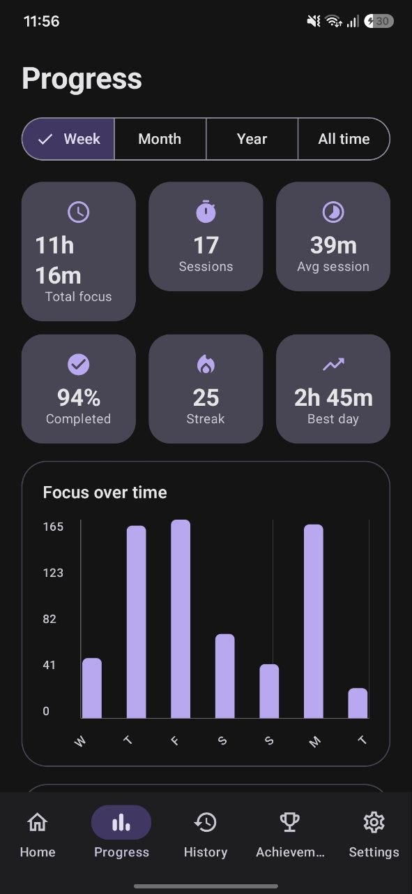
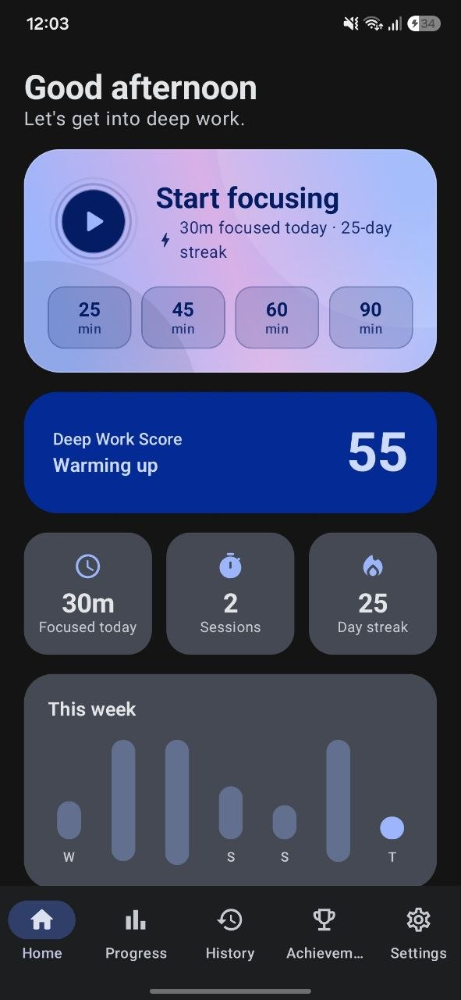
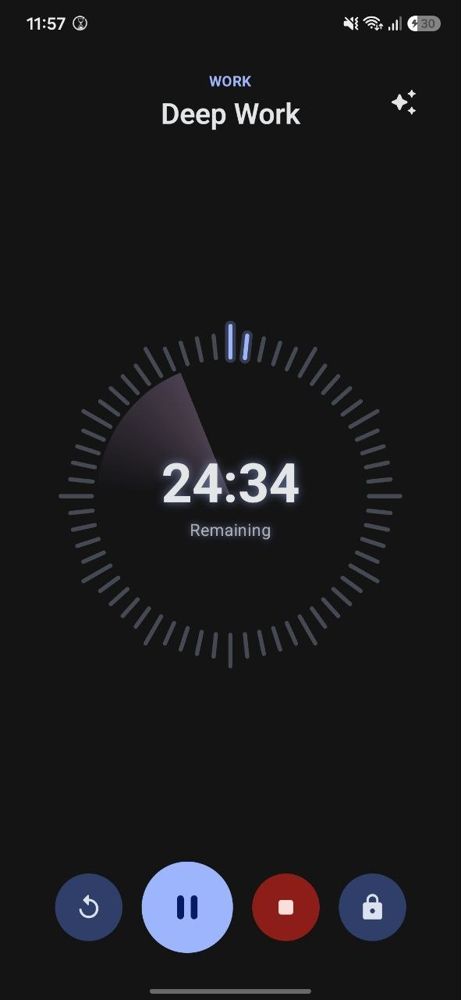
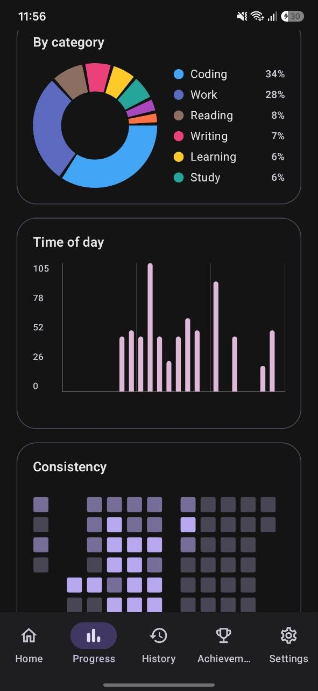
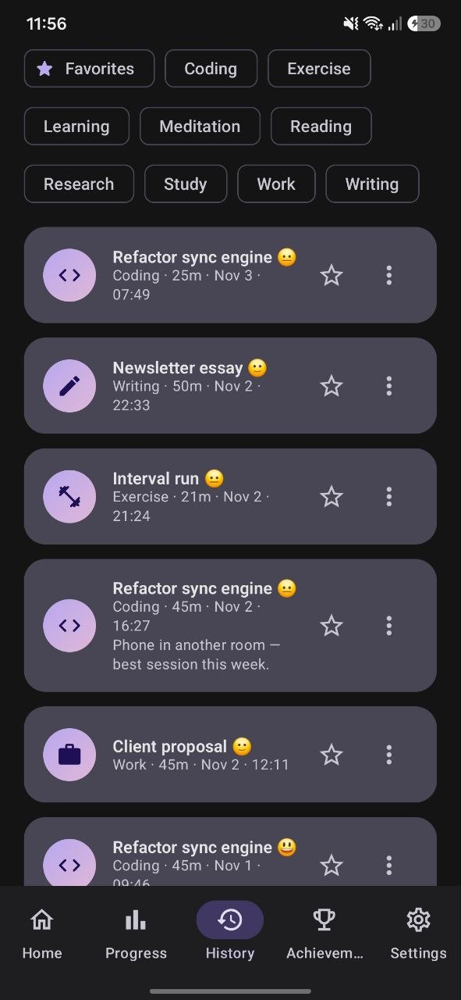
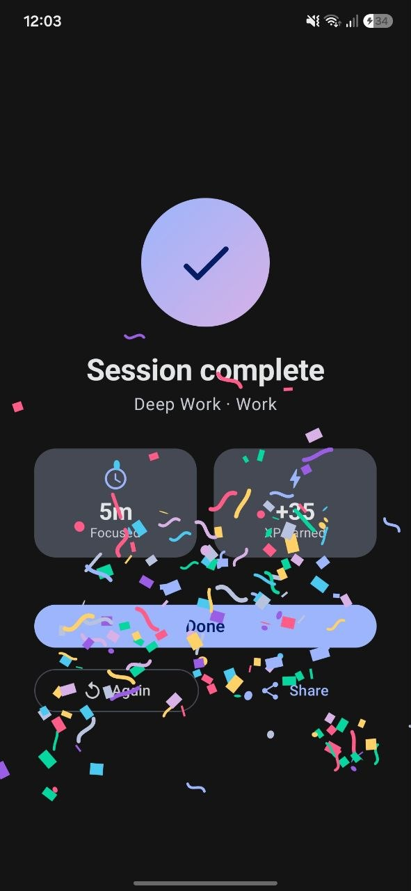

One tap into deep work
Start a 25, 45, 60 or 90-minute session straight from Home, or set any length from 5 to 240 minutes. Name the task, pick a category and go.
DeepFlow is a focus timer that keeps you in the work. Start a session in one tap, lock away other apps until you're done, and watch your streak, score and stats grow day by day.
Your phone waits. Your work doesn't.



A timer that keeps you focused, and a record that shows your focus improving.
Start a 25, 45, 60 or 90-minute session straight from Home, or set any length from 5 to 240 minutes. Name the task, pick a category and go.
Turn on Focus Lock and leaving DeepFlow shows your timer over every other app until you pause or stop. Unlocking takes a press and hold, so you can't do it on impulse.
Ring, Black hole, Bubbles, Flip paper, Orbit, Neon loader and Rolling. Switch any time with the sparkle button, and add an animated scene or your own photo behind it.
Week, month, year and all-time totals, focus over time, the hours you focus best, a category breakdown and a consistency grid of every focus day.
One number from 0 to 100 that blends today's focus time, your streak and how many days you focused this week, from Ready to focus up to In deep flow.
Earn XP for every focused minute, level up and unlock 11 achievements from First Step to Yearly Legend, each with a confetti celebration.
Each session is saved with its task, category and length. Search, filter, favourite, and add a mood and a note about how it went.
Sign in with Google to back up every session and see your history on another phone. Or skip it: DeepFlow works fully without an account, and you can export to a file.
The same simple loop, every day. It gets easier each time.
Type what you're focusing on, choose a category like Coding, Study or Writing, and set a length.
The full-screen timer keeps your screen awake. Tap the lock and other apps stay covered until you pause or stop.
Confetti, the time you focused and the XP you earned. Rate how it went and add a quick note.
Your streak, Deep Work Score, level and charts update straight away, and goals show how close you are.



Yes. Every feature, including Focus Lock, all seven timer faces, stats, history, goals, achievements, themes, the widget and backup, is free. The free version shows a short rewarded ad before a session and a banner on Home. DeepFlow Pro removes all ads. New users also get 10 minutes of Pro free on first launch, with no card needed.
Tap the lock button during a session. If you leave DeepFlow, a full-screen wall with your timer and task covers other apps and the home screen until you pause or stop the session. It uses Android's “Display over other apps” permission, which is asked only when you first tap the lock. If you decline, an in-app lock still meets you when you come back.
No. Focus Lock covers all apps during a running session, which keeps it simple. There are no per-app block lists or schedules, and it doesn't use accessibility services.
Nothing is lost. The timer runs in the background with a notification showing the countdown and Pause, Resume and Stop buttons. Even if the app is swiped away, reopening it takes you back to the running timer, or to your celebration if the session finished.
No. DeepFlow works fully offline without an account. Signing in with Google is optional and backs up your sessions so they sync to another phone. Signing out never deletes anything on your phone. You can also export your history to a file.
You choose: monthly, yearly, or a one-time lifetime purchase, all through Google Play. Subscriptions can be cancelled any time in the Play Store.
Not today. Each session is a single timed block that you can restart with one tap. DeepFlow focuses on the timer, Focus Lock and tracking your progress.
Every feature is free. Pro simply removes the ads, and your first 10 minutes of Pro are on us.